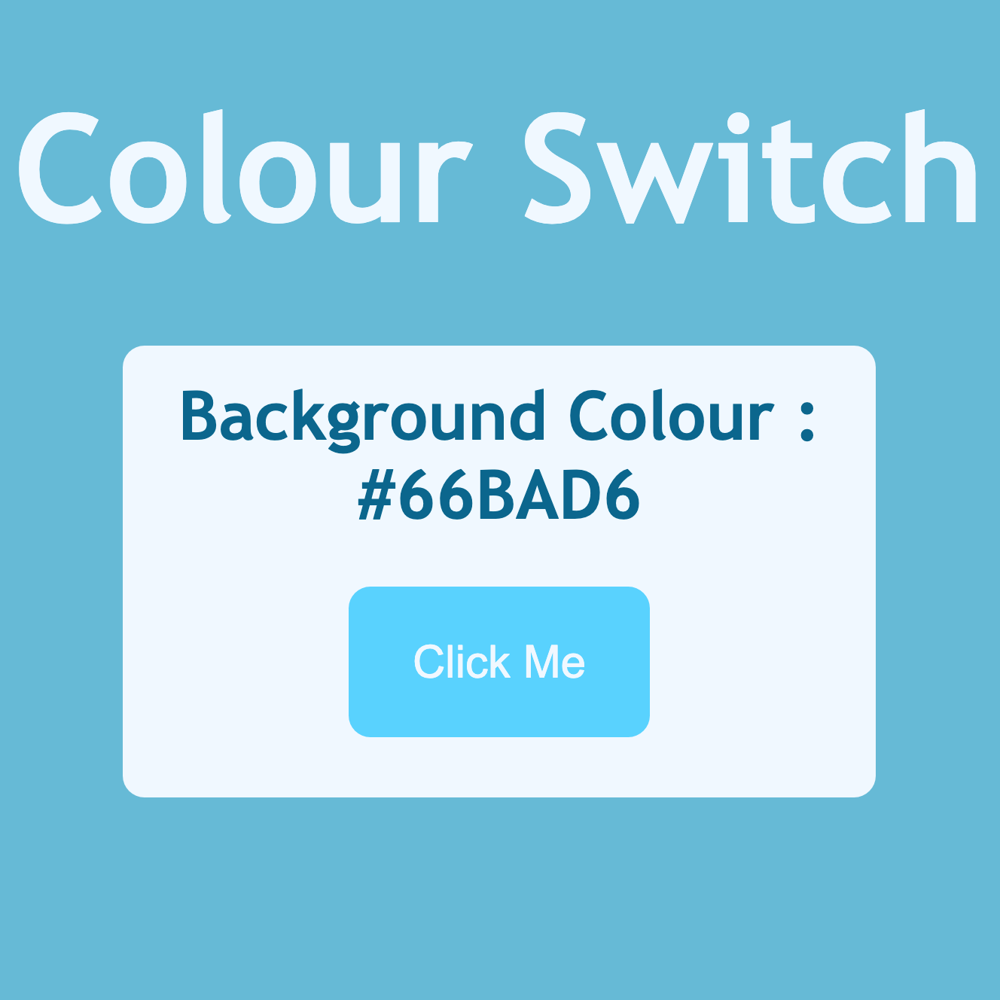
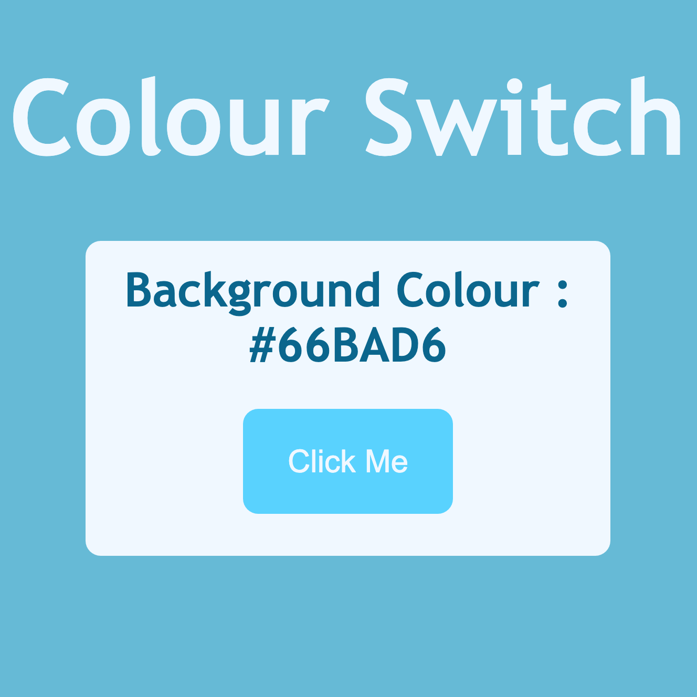

Welcome to my Portfolio Website.
Here you will get to know me and my experience within Website
Development. I have been learning to code on and off for over a year
now, having come to really enjoy the creative aspects in designing a
website or project. Therefore, my passion seems to lie more in Front
End Development at the minute. This is where I was able to obtain a
qualification in HTML5 and CSS3 through Microsoft.
This website was made entirely by myself, so that I can show off my
skills to date.
What am I looking for?
Currently, due to my lack of work experience within the field, I am
looking for any kind of experience I can obtain. Ideally I am
looking for full time work but would also be happy to do anything
part-time around my current job in the hopes that it will lead to a
greater position.
Although I currently favour Front End Development, I am also open to
trying my hand in different areas of the industry.
Why should you hire me?
- I have a very consistent, very high work ethic and always strive to improve.
- Having usually worked in teams before, I generally excel in these work environments but can also be very independent.
- I do enjoy meeting people in and around the workplace, and work hard to be as helpful and easy to work with as possible.
- I am confident in HTML5 and CSS3, but currently am mainly focused on creating JavaScript lead projects to improve that area of my Front End. This is due to me mainly focusing on the first to languages when I started learning.
- I am proficient in utilising Git and Github in my work, which I understand is industry standard. I have not yet contributed to many group projects but I do have knowledge of branching and pull requests.
- Currently, my aim is to get really confident with JavaScript so that a lot of the skills developed through that language can be transferrable across other ones, such as PHP. Overtime, my projects section will show more complex projects, but as of the moment, they are fairly basic which reflects my ability in the language.
If you are looking to contact me at all with any queries, you will find my contact details at the bottom of each page. Do not hesitate to get in touch as I will look to return any emails or calls as swiftly as possible.


 
